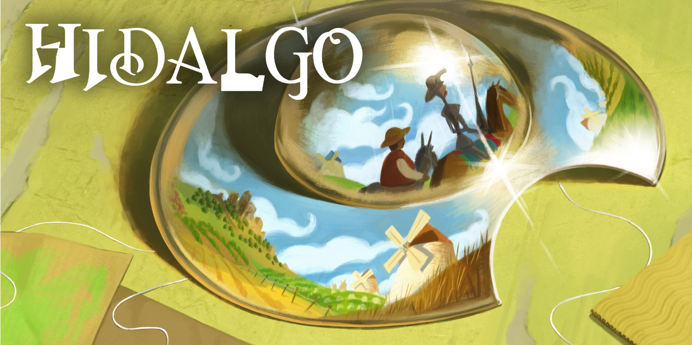
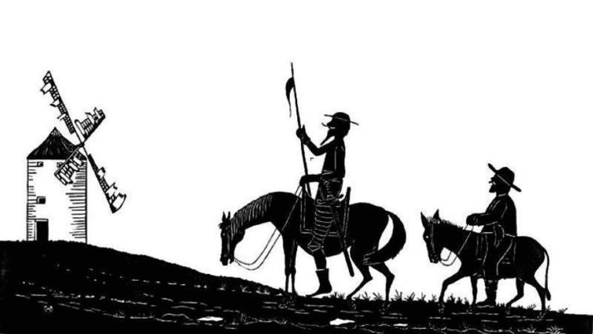
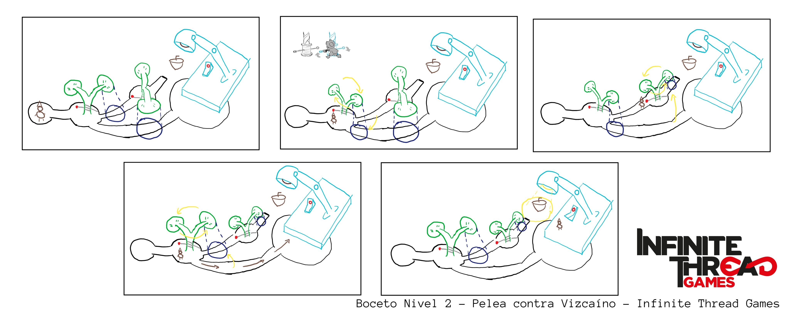
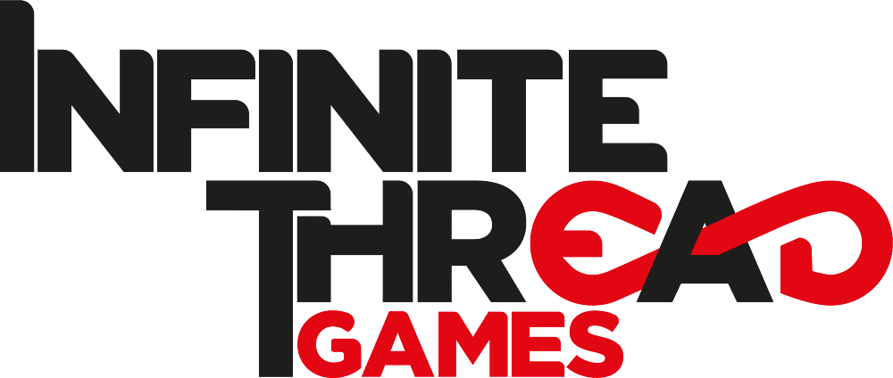

From the past may, I have been working alongside Infinite Thread Games in its upcoming game Hidalgo, a cozy narrative-adventure game based on the popular novel "Don Quijote de la Mancha". Hidalgo is my first serious game dev project, and it is a blast. Creating content for this game is a unique and fun experience where I have to take references from the original work and then give it a fun twist to fit the maquet style.
And that's what I'm going to talk about in this article. The process I follow from being assigned the task of working in a new level to the implementation in the project.
Follow what is already planned
Hidalgo was originally conceived by Roger Montserrat, director of Level Up - Game Dev Hub, and alongside Juan Pablo Guzmán, CEO of Infinite Thread Games, they made the first draft of Hidalgo's GDD that included the whole Player's Journey, the document where it is established at a high-level the whole game.
This document is not set in stone and may change in the future, but for now we are following it religiously. So, the first step in my pipeline is to check out the Player's Journey and talk with either Roger or Juanpy to take in their original ideas. They usually have already in mind some kind of puzzle or mechanic unique to each segment of the game, so I listen to them to be sure to include their ideas in my work.
Go and grab a book
One of the main selling points of Hidalgo is that it is based on "Don Quijote de la Mancha" both in its setting and stories. So of course, I need to check out the original novel before everything else. Fortunately, each segment in the game references specific passages on the novel, so I can just jump into the relevant chapters.
After finding which chapters I have to read, I open the book and start reading them. I usually do a couple of reads to ensure I understood everything correctly, and then look online for profesional interpretations from people expert in the subject to get a better grasp at the context.
Then, once I have fully soaked in the chapter, I begin listing every important theme, events and other elements that must be in my work to faithfully represent the passages. And then, and only then, I begin brain-storming.
Brain-Storming
This is the fun part. Once I have an stablished list of essential elements and Roger and Juanpy's ideas, I can let my imagination flow to find creative and unique experiences to our game. I often get inspired by mechanics I have seen in other games, but one of the quirks of working in Hidalgo is that every idea must be passed through a kid filter.
Everything must look like a toy or made by a child. For this, I usually get inspired by my childhood, and it usually leads to a nostalgia trip looking for specific toys I played with. I also have to take into account other factors, like the reusability of the new assets, the complexity or even localization issues.
Once I have the concept and justification that sound fun, I begin working on the mockups.
Mockups
I have to say, I'm not an artist. I have always hated drawing stuff because I lack the vision to transfer what I imagine to the paper. But during my time at the Game Design and Conceptualization bootcamp, I learnt how important it is to communicate well your ideas to the team. It didn't have to be good, it had to be understandable.
I still have to try and follow art principles like perspective and proportions, but I've won the battle against my fear. I draw horrible and I seriously need to take some classes, but my ideas are well communicated, and that is a win in my record.
Once I have my mockups, I am ready to present my idea to the team.
Revisions
I usually present my work during our weekly meetings, where we dedicate time to show and discuss our work. These are the most important moments in my job, listening to everyone opinions and thoughts. My best works have always come while discussing with my colleagues, when they offer their suggestions.
At minimum, I get new and exciting moments to include in each segment, and at best, my original idea evolves into a great one. I have to say, I am very lucky to work alongside the rest of the members of Infinite Thread Games because they are some of the most creative and hard-working people I have ever met.
From here, I usually go back to the drawing board to mockup the new ideas, and then present them again. Once the base is solid, I begin collaborating with the involved members to create Concept Art, developing the code and creating the required assets. I provide them with documentation that ranges from high-level like storyboards or more mockups to lower-level such as State Machines or Flow Diagrams.
Seeing the Results
I didn't know how rewarding it felt to see your ideas come to life until I felt it myself. I have already made some solo projects, but they are nothing compared to seeing the results from collaborating with other talented people over many iterations.
I hope that you get at least a quarter of my happiness when playing Hidalgo, because then I would have made a good job. But I don't have to imagine, because some of the stuff I have been working on are going to be seen very soon! So stay tuned!